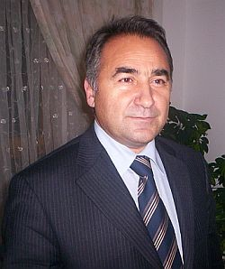

Kamuoyuna Duyurusu
Ankara Üniversitesi İlahiyat Fakültesi İslam Mezhepleri Tarihi öğretim üyesi ve saygıdeğer hocamız Prof. Dr. Hasan ONAT (63), koronavirüs sebebiyle tedavi gördüğü hastanede 26 Eylül 2020 tarihinde hayatını kaybetti. 27 Eylül 2020 tarihinde öğle namazını müteakip kılınan cenaze namazından sonra toprağa verildi.
Sayın Hasan Onat, Ankara Üniversitesi İlahiyat Fakültesi mezunu idi. Prof. Dr. Ethem Ruhi Fığlalı’nın danışmanlığında “Emeviler Devri Şii Hareketleri” adlı doktora çalışmasını hazırladı. Mezun olduğu fakültede yaklaşık 40 yıldır mezhepler tarihi, Çağdaş İslam Akımları ve Sosyal Bilimler Metodolojisi dersleri vermekteydi. Bir süre Çorum İlahiyat Fakültesi’nde dekanlık görevinde ve yurtdışındaki üniversitelerde misafir öğretim üyeliği görevinde bulundu. Din Öğretimi Genel Müdürlüğü’nün ilk, orta ve liseler için Din Kültürü Ahlak Bilgisi program geliştirme çalışmalarında yer aldı. Alevilik açılımı adı altında yürütülen çalıştaylara katıldı. Yurtiçi ve yurtdışı onlarca sempozyuma tebliğler sundu, yüzlerce konferans verdi. Haksızlıklara karşı dik duruşu ve eleştirel bakışı, cesareti, nezaketi, kibarlığı, cömertliği, beyefendiliği ve güler yüzlülüğü ile herkesin takdirini ve beğenisini kazanmıştı. Onun düşünce sisteminin merkezinde insan vardı. Din, insan içindi ve insanın insanlığını gerçekleştirmekte bir araçtı. Hangi mezhep ve meşrepten, hangi siyasi görüş ve anlayıştan olursa olsun, ayrım yapmaksızın herkese karşı sevgi besleyen ve saygı gösteren bir güzel insandı. Onun için insan olan öteki değildi. Ankara İlahiyat Fakültesi’ni akılcı ve eleştirel bakış açısıyla en iyi temsil edenlerdendi. Türkiye sevdalısı önemli bir bilim adamı idi. Sorunlara, sosyolojik, psikolojik ve felsefi açılardan bakabilme birikimine sahipti. Okumak onun tutkusuydu. Hasan Onat, denince okumak, paylaşmak, düşünmek ve tartışmak akla gelir. Gönlü gibi, kapısı da herkese açıktı. Onun yol göstericisi akıl ve vahiydi. Kur’an aşığı samimi bir mümindi. Geleceğe ait pek çok projesi vardı. Bir grup arkadaşı ile birlikte Kur’an medeniyeti adlı bir proje üzerinde çalışıyordu. Hz. Muhammed’in hayatı ile ilgili önemli bir birikime sahipti. Hatta bu konuda bir kitap kaleme alma düşüncesindeydi. İlmi semerelerini, son zamanlarda eserleriyle okurlarına sunmaya başlamıştı. Yayına hazırladığı, ama henüz bastıramadığı kitap çalışmaları bulunmaktaydı. Din-siyaset ve din-hukuk ilişkilerine dair özgün görüşlere sahipti. Laikliği, din ve vicdan özgürlüğü açısından Türkiye için önemli bir şans olarak görürdü. Türkiye’nin hassas sorunlarından kadın sorunu, cemaatler ve tarikatler sorunu ve Alevilik-Bektaşilik üzerine önemli çözümleri vardı. İslam mezhepleri tarihi alanında yaptığı araştırmalarda süreç takibi ve fikir-hadise irtibatı gibi yeni yaklaşımlar geliştirerek, genç meslektaşlarının işini kolaylaştırıyordu. İslam dünyasının kurtuluşunu akıl-bilim ve din arasındaki ilişkinin doğru bir şekilde kurulmasına bağlardı. Bütün yazılarında ve konuşmalarında mezheplerin dinin anlaşılma biçimleri ve beşer ürünü olduğunu vurgulardı. İslam dünyasında mezhepçilik, tarikatçılık ve cemaatçiliğin önüne geçmek için Müslümanların “İslam ortak paydası” ve “kök değerler” üzerinde birleşmeleri gerektiğini savunurdu. Din-mezhep ilişkisinde, mezheplerin din olmadığı, dini temsil etmediği ve mezheplerüstü yaklaşımın gerekliliğini Türkiye’de yüksek sesle seslendirenlerin başında geliyordu. O, sadece mezhepler tarihçileri için değil bütün alanlar için fikirlerine danışılan bir bilim insanı idi. İlahiyat ve ilahiyatçı olmayan herkese hitap edebiliyordu. Açık ve berrak düşünen düşündüğü gibi de konuşan iyi bir bilim insanıydı. Arı-duru bir Türkçe ile konuşur ve yazardı. Onun ulaşamadığı kalp, etkilemediği zihin yoktu. Geride gök kubbede hoş bir seda bıraktı. Ankara İlahiyat Fakültesi’nde master ve doktora yapan herkes, hangi bilim dalından olursa olsun, onun bilimsel rehberliğinden yararlanmıştı. Şiilik, Alevilik-Bektaşilik üzerine yaptığı çalışmalar ve yaptırdığı tezler ile alanda yeni bir çığır açmıştı. İlahiyat araştırmalarında, bilimsel bilgi ve eleştirel yaklaşımın gelişmesi için çok çaba gösterdi. Türkiye’nin eğitim camiasına binlerce talebe yetiştirdi, mezhepler tarihi alanında onlarca master ve doktora tezine danışmanlık yaptı. Öğrencilerin hem hocası hem babası idi. Bilim adamı olmaya namzet tecessüs ruhlu öğrencileri lisans döneminde seçer ve onlara çok sayıda kitap okuturdu. Okunan kitapları birlikte tartışmak için özel zaman ayırırdı. Özellikle öğrencilerin özgüven sahibi olmasına, eleştirel yaklaşma ve özgür düşünme yeteneklerinin gelişmesine katkı sağlayacak kitaplar okuturdu. Daha sonra özgün konularda onlara lisans tezi verirdi. Onunla bu macerayı yaşayan her öğrenci, bilim dünyasına ilk adımını atmış olurdu. Onun bu şekilde ilgilendiği pek çok öğrencisi şu anda çeşitli üniversitelerde öğretim üyeliği yapmaktadır. Halkımızı din konusunda doğru bilgilendirmek için çok sayıda radyo ve televizyon programı gerçekleştirdi ve tartışma programlarına katıldı. Yazdığı çok sayıda makale ve kitaplarıyla Türkiye’nin ve İslam dünyasının sorunları için çözümler aradı. Bilim adamı bilinci ve sorumluluğu ile güncel sorunlar karşısında eleştiri ve katkılarını sunmaya devam etti. Bu eleştirileri sebebiyle IŞİD ve FETÖ tarafından hedef gösterildi. Aynı zihniyetteki edep ve ahlak yoksunu birkaç zavallı, sayın hocamızın ölümünün ardından onun hakkında, -eğer hayatta olsaydı, gülüp geçeceği- bizleri üzen sözler ve yorumlar sarf etti. Bunların hemen hemen hepsi, onu yakından tanımayan, ilimden ve ilmi etikten behresi olmayan fikir hırsızlarının hezeyanlarıydı.
Sayın Hasan Onat’ın ansızın aramızdan ayrılması, başta sevgili annesini ve eşi Nurten Onat Hanımefendi’yi, çocukları Oğuz ve Yavuz’u, kardeşi Savaş’ı, onu evladı gibi seven ve onu takip eden hocası Ethem Ruhi Fığlalı’yı, yakınlarını, dostlarını, sevenlerini, öğrencileri ve meslektaşları olarak bizleri ve onu tanıyan herkesi hüzne boğmuştur. Yüce Allah’tan kendisine rahmet diliyor; ailesine, yakınlarına, dostlarına ve sevenlerine, özellikle İslam Mezhepler Tarihi camiasına başsağlığı ve sabırlar temenni ediyoruz.
Alanımızın duayenlerinden olan Sayın Hasan Onat’ın Covid-19’a yenik düşmesi ve salgın tedbirleri sebebiyle resmi törenlerin yapılamamış olması bizleri çok üzmüştür. Hocamızın bir çok seveni ve dostu, ailesine ve bizlere telefon, e-mail veya başka yollarla taziyede bulunmuştur. Ancak bir kısmına geri dönüş imkanı olmamıştır. Bu sebeple Prof. Dr. Hasan Onat Hocamızın cenazesine iştirak ederek acımızı paylaşan, telefonla arayan, mesaj gönderen, sosyal paylaşım siteleri üzerinden taziyelerini ileten tüm dostlarına ve sevenlerine göstermiş oldukları yakın ilgiden dolayı sonsuz teşekkür ediyor, saygılar sunuyoruz.
Ankara Üniversitesi İlahiyat Fakültesi
Temel İslam Bilimleri Bölümü
İslam Mezhepleri Tarihi Anabilim Dalı